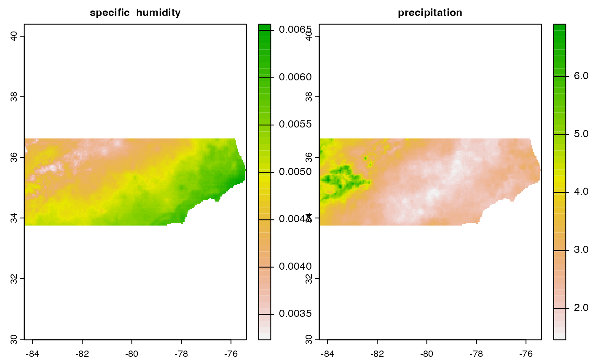

One challenge that opendap catalogs have for end users is that they are often dissagregated by space and/or time. While this structure may (or may not) make sense from the data storage/service side, it is a burden on people who want the data.
Here we look at two data sets MODIS and MACA. The first is dissagregated across space (XY) while the second across time (T).
XY Aggregates
Within MODIS there are 460 non-fill tiles with an approximate 10 degree by 10 degree size at the equator. The public (and keyless) MODIS OpenDAP server stores each tile - aggregated through time - as a single resource.

 In cases where the AOI (like the state of Florida) crosses mutiple tiles, the multiple resources must be identified, subset and then stitched together! This XY aggregations is one of the perks avaialble with
In cases where the AOI (like the state of Florida) crosses mutiple tiles, the multiple resources must be identified, subset and then stitched together! This XY aggregations is one of the perks avaialble with dap().
Example
Lets find a dataset of interest:
(modis_ex <- search("MOD16A2.006 PET"))
#> # A tibble: 1 × 16
#> id grid.id URL tiled variable varname long_name units model ensemble
#> <chr> <chr> <chr> <chr> <chr> <chr> <chr> <chr> <chr> <chr>
#> 1 MOD16A2.0… XY_mod… http… XY_m… NA PET_50… MODIS Gr… kg/m… NA NA
#> # … with 6 more variables: scenario <chr>, T_name <chr>, duration <chr>,
#> # interval <chr>, nT <int>, rank <dbl>And then query that dataset for a spatial and temporal slice:
system.time({
dap <- dap(
catolog = modis_ex,
AOI = AOI::aoi_get(state = "FL"),
startDate = "2020-01-01",
endDate = "2020-01-31"
)
})
#> source: https://opendap.cr.usgs.gov/opendap/hyrax/MOD16A2.006/h10v05...
#> tiles: 3 XY_modis tiles
#> varname(s):
#> > PET_500m [kg/m^2/8day] (MODIS Gridded 500m 8-day Composite potential Evapotranspiration (ET))
#> ==================================================
#> diminsions: 1383, 1586, 5 (names: XDim,YDim,time)
#> resolution: 463.313, 463.313, 8 days
#> extent: -8417233.78, -7776472.29, 2712464.3, 3447278.27 (xmin, xmax, ymin, ymax)
#> crs: +proj=sinu +lon_0= +x_0= +y_0= +units=m +a=6371007...
#> time: 2019-12-29 to 2020-01-30
#> ==================================================
#> values: 10,967,190 (vars*X*Y*T)
#> user system elapsed
#> 2.825 0.813 10.658Note that the returned object is a single SpatRaster layer for each time period, but in the summary we see this is the result of compositing 3 unique tiles (e.g. resources).

T Aggregates
Some data sets also tile by time period. Often this occurs when there is a historic period and multiple periods of future forecasts using different climate scenarios.
An example of this is the MACA dataset. Say we want daily specific humidity and rainfall from the MACA down scaling of the BNU-ESM model.
First we need to find the catalog elements:
tmp <- rbind(search("maca daily huss bnu-esm"),
search("maca daily pr bnu-esm"))
(select(tmp, id, variable, model, scenario, duration))
#> # A tibble: 6 × 5
#> id variable model scenario duration
#> <chr> <chr> <chr> <chr> <chr>
#> 1 maca_day huss BNU-ESM historical 1950-01-01/2005-12-31
#> 2 maca_day huss BNU-ESM rcp45 2006-01-01/2099-12-31
#> 3 maca_day huss BNU-ESM rcp85 2006-01-01/2099-12-31
#> 4 maca_day pr BNU-ESM historical 1950-01-01/2005-12-31
#> 5 maca_day pr BNU-ESM rcp45 2006-01-01/2099-12-31
#> 6 maca_day pr BNU-ESM rcp85 2006-01-01/2099-12-31Here we see that the data set is split at “2006-01-01” into a historic, and multi scenario future. For out example lets chose the historic and rcp85 future:
(maca_ex <- tmp[tmp$scenario %in% c("historical", "rcp85"), ])
#> # A tibble: 4 × 16
#> id grid.id URL tiled variable varname long_name units model ensemble
#> <chr> <chr> <chr> <chr> <chr> <chr> <chr> <chr> <chr> <chr>
#> 1 maca_day 167 http:/… T huss specif… Daily Me… kg k… BNU-… r1i1p1
#> 2 maca_day 167 http:/… T huss specif… Daily Me… kg k… BNU-… r1i1p1
#> 3 maca_day 167 http:/… T pr precip… Precipit… mm BNU-… r1i1p1
#> 4 maca_day 167 http:/… T pr precip… Precipit… mm BNU-… r1i1p1
#> # … with 6 more variables: scenario <chr>, T_name <chr>, duration <chr>,
#> # interval <chr>, nT <int>, rank <dbl>Example
Once defined
system.time({
(dap <- dap(
catolog = maca_ex,
AOI = AOI::aoi_get(state = "NC"),
startDate = "2005-12-25",
endDate = "2006-01-05"
))
})
#> source: http://thredds.northwestknowledge.net:8080/thredds/dodsC/agg...
#> tiles: 2 T tiles
#> varname(s):
#> > specific_humidity [kg kg-1] (Daily Mean Near-Surface Specific Humidity)
#> > precipitation [mm] (Precipitation)
#> ==================================================
#> diminsions: 215, 69, 12 (names: lon,lat,time)
#> resolution: 0.042, 0.042, 1 days
#> extent: -84.34, -75.38, 33.75, 36.63 (xmin, xmax, ymin, ymax)
#> crs: +proj=longlat +a=6378137 +f=0.00335281066474748 +p...
#> time: 2005-12-25 to 2006-01-05
#> ==================================================
#> values: 356,040 (vars*X*Y*T)
#> user system elapsed
#> 0.190 0.072 6.115
dap
#> $specific_humidity
#> class : SpatRaster
#> dimensions : 69, 215, 12 (nrow, ncol, nlyr)
#> resolution : 0.04166599, 0.041666 (x, y)
#> extent : -84.33531, -75.37712, 33.75044, 36.62539 (xmin, xmax, ymin, ymax)
#> coord. ref. : +proj=longlat +ellps=WGS84 +no_defs
#> sources : memory (7 layers)
#> memory (5 layers)
#> names : 2005-~rical, 2005-~rical, 2005-~rical, 2005-~rical, 2005-~rical, 2005-~rical, ...
#> min values : 0.0009929931, 0.0020145120, 0.0029251990, 0.0050238664, 0.0035579144, 0.0020626856, ...
#> max values : 0.003929262, 0.006220981, 0.007751799, 0.009064749, 0.008505707, 0.004949129, ...
#> unit : kg kg-1, kg kg-1, kg kg-1, kg kg-1, kg kg-1, kg kg-1, ...
#>
#> $precipitation
#> class : SpatRaster
#> dimensions : 69, 215, 12 (nrow, ncol, nlyr)
#> resolution : 0.04166599, 0.041666 (x, y)
#> extent : -84.33531, -75.37712, 33.75044, 36.62539 (xmin, xmax, ymin, ymax)
#> coord. ref. : +proj=longlat +ellps=WGS84 +no_defs
#> sources : memory (7 layers)
#> memory (5 layers)
#> names : 2005-~rical, 2005-~rical, 2005-~rical, 2005-~rical, 2005-~rical, 2005-~rical, ...
#> min values : 0.0000000, 0.0000000, 0.0000000, 7.0845313, 0.0000000, 0.0000000, ...
#> max values : 9.2031107, 11.6709108, 29.1529446, 36.3147240, 9.7074308, 2.3503284, ...
#> unit : mm, mm, mm, mm, mm, mm, ...Finally lets look at the mean of each variable over this period:
